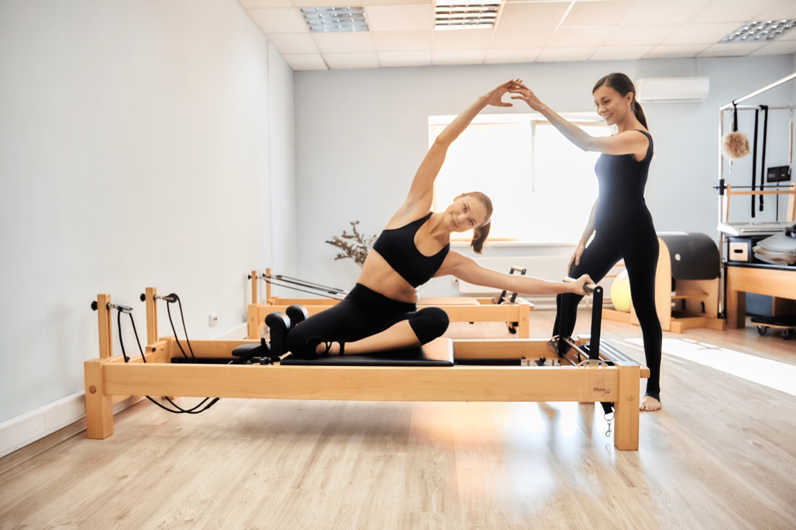

У нас нет случайных занятий. Каждое направление решает конкретную задачу — от реабилитации до гибкости. Не знаете, с чего начать? Приходите на пробное занятие: тренер определит отправную точку и подскажет маршрут.

01
Классический пилатес на реформере
Базовое направление по методике Джозефа Пилатеса. Последовательная работа со всем телом: сила, выносливость, осанка, дыхание. Подходит и новичкам, и тем, кто занимается давно – нагрузка регулируется пружинами и количеством повторений.
Специализированные занятия для всех, кого беспокоит скованность, боли в шее, спине и пояснице. Мягкая работа в разгруженных положениях, укрепление мышечного корсета, коррекция осанки. Тренер следит за техникой каждого упражнения – в мини-группе до 6 человек это реально.
Бережное возвращение тела к активности. Отдельное внимание – мышцам тазового дна и глубоким мышцам кора. Подходит кормящим мамам: режим комфортный, без экстремальных нагрузок.
Занятия на растяжку, в том числе на столе-кадиллаке – идеальном тренажере для гибкости. Работаем над амплитудой без боли: гибкость приходит от регулярности.
Программа под конкретный запрос: реабилитация, осанка, силуэт, подготовка к событию. Занятие один на один, полное внимание тренера, любые корректировки в реальном времени.